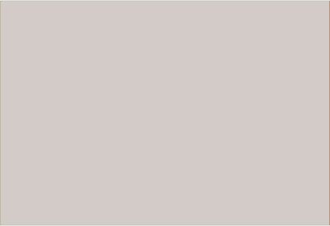

Головні та визначні культові споруди
Густота головних та визначних культових споруд за регіонами
(споруд на 1 тис. км²)
| до 0,25 | |
| 0,25-0,50 | |
| 0,51-1,0 | |
| понад 1,0 | |
|  | дані відсутні |
Головні та визначні культові споруди
Собори, церкви
| православні | |
| греко-католицькі | |
| вірменські | |
| протестантські |
Собори, костели
| римо-католицькі |
Мечеті
| мусульманські |
Синагоги
| іудейські |
Кенаси
| іудейські |